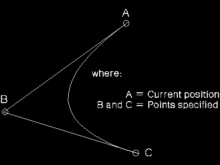
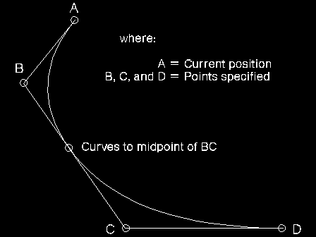

If two points are supplied, an imaginary straight line is drawn from the current position to the first point and a second straight line from the first point to the second. A curve is then constructed, starting at the current position and tangential to the first straight line. The curve is drawn such that it reaches the last point at a tangent to the second straight line. Example A shows the curve constructed, given current position A and the two points B and C.
If more than two points are supplied, a series of imaginary straight lines is constructed through them (as in the GpiPolyLine function). All of the straight lines except the first and last are then divided in two at their mid-points. A series of curved fillets is then drawn, each starting at the end point of the last, at one of the mid-points. Example B shows the curve constructed, given current position A and three points B, C, and D.
The current position is set to the last point.
Each individual fillet always lies within the area bounded by the start, end, and control points.
It is not an error for any of the points to be coincident.
The maximum number of fillets allowed in the polyfillet is more than 4 000. 